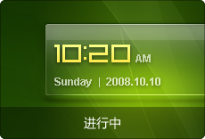

某省公安厅警务平板电脑界面整体用户体验设计。产品的手写交互模式，会议体验模式上做了诸多领域内创新突破。
Portfolio
移动终端
DreamBoo代表着一种设计理念，理想与商业化的结合，运用看似极为朴素的元素阐述产品，简洁而不简单。
一款基于Android系统的天气服务软件，将传统的天气元素做了系统化的再设计，用户关心天气的目的在于其之后展开的行为。
一款社区化的借物系统，用户只需在软件商城下载即可使用。沐川系受邀承担其整体的用户体验设计。
一款明确用户定位的商务手机炒股软件，在用户视觉体验上我们做了颇多尝试，不断在概念与技术的中提炼，产品最终达到成熟。
项目进行中。

M3概念解决方案项目进行中。